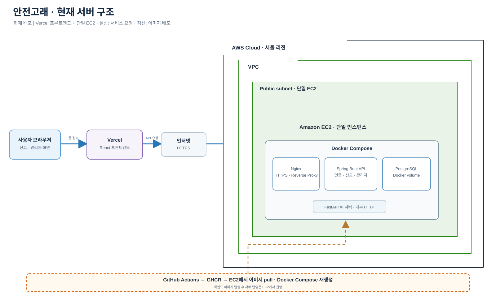
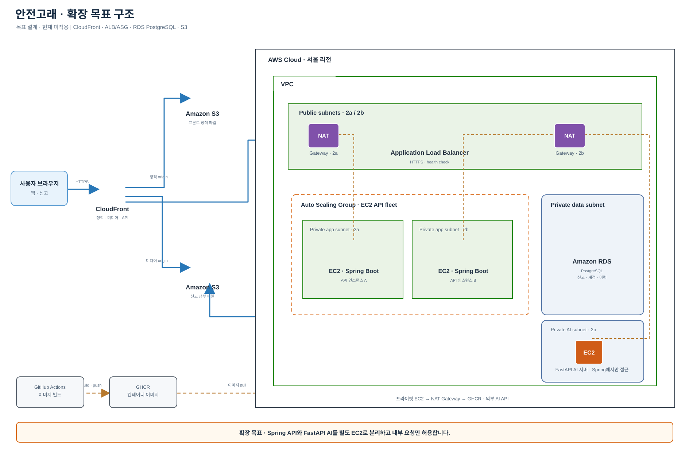

위치와 담당 부서를 직접 찾아야 하는 신고
사진과 현장 설명을 입력하고 건물·세부 위치·지도 좌표를 확인합니다. AI는 추가 질문과 신고서 초안을 제안하고, 최종 제출은 사람이 결정합니다.
TEAM PROJECT · 2026.04 — 2026.09
캠퍼스의 위험을 발견한 순간부터 담당자의 조치 완료까지 연결하는 안전 신고 서비스입니다.
사진·위치 기반 신고 작성부터 담당 부서의 조치 관리까지 연결합니다. 담당 영역은 Spring Boot 백엔드와 배포입니다.

01 / OVERVIEW
신고자가 위치와 담당 부서를 직접 찾아야 하고, 접수 이후에는 처리 상태를 확인하기 어렵습니다. 안전고래는 위치·사진 기반 신고 작성과 담당자의 처리 흐름을 하나로 연결합니다.
사진과 현장 설명을 입력하고 건물·세부 위치·지도 좌표를 확인합니다. AI는 추가 질문과 신고서 초안을 제안하고, 최종 제출은 사람이 결정합니다.
관리자 화면에서 위험도, 부서, 상태와 검색어로 신고를 찾습니다. 검토, 재배정, 조치 완료를 처리하고 이력과 신고자 알림을 남깁니다.
인증·권한, 신고·관리자 API, PostgreSQL 모델과 Flyway, FastAPI 연동 계약, HWP 문서 생성, EC2·Docker Compose 배포
React 사용자·관리자 화면과 FastAPI 모델 호출·프롬프트·분석 로직은 팀원이 담당했습니다. 백엔드에서는 AI 서버 연동 API와 데이터 변환을 구현했습니다.
SERVICE FLOW
신고 작성부터 관리자 조치까지 이어지는 주요 사용자·서버 흐름입니다.
신고 초안을 만들고 사진을 올립니다. 건물 또는 기타 장소를 선택하고 지도에서 좌표를 보정합니다.
초안 · RECEIVING백엔드가 AI 서버에 사진 판독, 확인 질문, 신고서 초안을 요청합니다. 사용자는 결과를 검토해 내용을 확정합니다.
FastAPI 연동 · 사용자 확인제출 시 신고를 RECEIVED로 전환하고 추적 번호, 처리 이력, 접수 알림을 저장합니다.
RECEIVING → RECEIVED담당자가 검토하고 부서를 조정합니다. 조치 내용을 입력한 경우에만 완료 처리하며 신고자에게 결과를 알립니다.
REVIEWING → RESOLVED신고는 건물 ID와 세부 설명, 위도·경도를 함께 가질 수 있습니다. 건물을 특정할 수 없는 야외 장소는 건물 ID 없이 좌표와 설명으로 저장합니다.
초안은 지도와 관리자 접수 목록에서 제외합니다. 접수 이후에는 상태 변경과 부서 변경을 이력으로 남기고, 처리 완료에는 조치 내용을 요구합니다.
MY CONTRIBUTION
인증·신고 접수·관리자 처리·AI 서버 연동 API를 구현했습니다.
Google ID 토큰을 검증한 뒤 서비스용 JWT를 발급합니다. 사용자는 Google 계정 식별자로 찾고, 관리자 프로필 연결 여부를 서버가 확인해 권한을 부여합니다.
AuthService · Spring Security초안 생성, 사진 업로드, 위치 수정, 최종 제출 API를 구현했습니다. 건물 ID와 세부 위치·좌표를 함께 저장하고 추적 번호로 접수 결과를 조회합니다.
ReportService · PostgreSQL관리자 목록에 상태·부서·검색 조건을 적용했습니다. 검토 중 전환과 조치 완료를 분리하고, 완료 시 조치 내용을 필수로 받아 변경 이력과 알림을 기록합니다.
AdminReportService · JPA Specification팀원의 FastAPI 서버에 사진 판독·추가 질문·신고서 초안을 요청합니다. AI의 위험 등급과 부서 코드를 백엔드 데이터 모델에 맞춰 변환하고 저장합니다.
HttpAiAnalysisClient · 내부 API제출 트랜잭션이 커밋된 뒤 이벤트 리스너가 관리자용 인사이트를 비동기로 생성합니다. 이 작업이 실패해도 이미 저장된 접수는 유지하며, 관리자가 재생성할 수 있습니다.
@Async("insightExecutor")
@TransactionalEventListener
void onReportSubmitted(ReportSubmittedEvent event)관리자가 HWP를 요청하면 현재 신고·프로필·사진 데이터를 양식에 채워 다시 만듭니다. 마지막 생성 파일의 위치는 신고에 기록하고, 파일은 업로드 볼륨에 저장합니다.
POST /api/v1/admin/reports/{id}/report-file
GET /api/v1/admin/reports/{id}/report-filePRODUCT SCREENS
신고 작성부터 관리자 조치까지, 화면에서 기능이 연결되는 모습을 담습니다.
assets/safewhale/screens/report-create.pngassets/safewhale/screens/location-map.pngassets/safewhale/screens/admin-report.pngassets/safewhale/screens/report-result.png02 / ARCHITECTURE
프론트엔드는 Vercel에서 제공하고, API·데이터베이스·AI 서버는 한 대의 EC2에서 Docker Compose로 실행합니다. 관리형 데이터베이스와 CDN 없이 EC2 한 대에서 애플리케이션과 PostgreSQL을 함께 운영합니다.

브라우저 요청은 HTTPS로 Nginx에 도착합니다. API가 데이터베이스와 AI 서버에 Docker 내부 주소로 연결하며, DB와 AI 컨테이너 포트는 직접 공개하지 않습니다.
PostgreSQL 데이터와 업로드 파일은 각각 Docker 볼륨에 둡니다. 앱 컨테이너를 새 이미지로 교체해도 신고 데이터와 파일이 컨테이너와 함께 지워지지 않도록 했습니다.
TECHNOLOGY CHOICES
각 기술은 구현 역할과 시연 환경에 맞춰 선택했습니다.
핵심 API에는 Google 로그인 검증, JWT 권한 관리, 신고 상태 전이, 트랜잭션과 관리자 검색이 필요했습니다. Spring Boot와 Spring Security·JPA를 적용해 인증부터 데이터 처리까지 Java 서버에서 일관되게 구현했습니다. 관리자 화면은 별도 React 앱으로 제공해 Django Admin을 사용하지 않았으며, Python FastAPI는 팀의 AI 모델 연동 서비스에 사용했습니다.
신고는 사용자·건물·담당 부서·사진·알림·처리 이력이 서로 연결되는 업무 데이터입니다. PostgreSQL의 관계와 외래 키로 참조 무결성을 유지하고, 상태 변경과 이력 저장은 트랜잭션으로 함께 처리했습니다. 관리자 화면에서 상태·부서·검색 조건을 조합하는 조회도 SQL 기반으로 구성했습니다. MongoDB의 문서 모델보다 관계가 분명한 신고 처리 흐름과 데이터 일관성을 우선해 PostgreSQL을 선택했습니다.
신고의 건물 ID와 위도·경도는 PostgreSQL에 저장하고, 프론트엔드 Kakao Maps에서 위치를 표시·보정합니다. 현재 유사 신고 API는 같은 건물 ID와 최근 30일 기준으로 후보를 찾습니다. 시연 단계에서는 이 조건으로 신고 위치를 좁히고, 좌표 반경 검색이나 PostGIS 공간 인덱스는 적용하지 않았습니다. 건물과 신고의 관계형 데이터, 지도 표시용 좌표를 하나의 데이터 모델에서 다룰 수 있도록 구성했습니다.
향후 신고 내용의 의미 유사도를 활용할 수 있도록 pgvector 확장과 임베딩 테이블을 마이그레이션으로 추가했습니다. 신고 ID와 임베딩을 기존 PostgreSQL 데이터와 연결해 검색하도록 설계해, 별도 벡터 데이터베이스와 동기화 경로를 추가하는 대신 한 저장소 안에서 관계형 데이터와 벡터를 관리할 수 있는 기반을 마련했습니다. 현재 유사 신고 API는 같은 건물과 최근 30일 조건으로 후보를 조회합니다. pgvector 의미 검색은 후속 적용 항목입니다.
AI 기능은 팀원의 Python 서비스로 분리했습니다. FastAPI의 요청 스키마로 분석·질문·초안 API 계약을 정의하고, 백엔드는 내부 HTTP 요청으로 결과를 받습니다. 모델 호출·프롬프트 변경은 AI 서버가, 인증·업무 규칙·신고 저장은 Spring Boot가 맡아 각 서비스의 변경 범위를 나눴습니다.
대회 시연용 서비스라 다중 서버 오케스트레이션보다 적은 운영 구성으로 시작할 수 있는 단일 EC2와 Compose를 사용했습니다. Java API, PostgreSQL, FastAPI, Nginx는 컨테이너로 분리해 실행·로그·환경변수를 서비스별로 관리합니다. Nginx가 공개 HTTPS 진입점과 API 프록시를 맡고 내부 서비스 포트는 외부에 직접 노출하지 않습니다. 단일 EC2 구성으로 고가용성은 제공하지 않습니다.
프론트엔드는 정적 웹을 별도 배포하기 쉬운 Vercel에 두었습니다. GitHub Actions는 백엔드 이미지를 빌드해 GHCR에 발행하고, EC2의 Compose가 해당 이미지를 받아 실행합니다. CI에서 이미지 발행까지 자동화하고 EC2 반영은 별도로 진행해, 빌드 결과와 운영 적용 단계를 구분했습니다.
Vercel 프론트와 EC2 API 사이 통신도 HTTPS가 필요해 Nginx에서 TLS를 처리하고 Let's Encrypt 인증서를 사용했습니다. 외부 요청을 한 진입점으로 모으고, 인증서 발급 비용 없이 도메인 통신을 암호화할 수 있었습니다.
선택 근거는 실제 데이터 모델과 배포 구조를 기준으로 적었습니다. 프로젝트 전체 스택 중 React·TypeScript·Vite·Tailwind·Kakao Maps와 FastAPI·Gemini·Langfuse는 팀원 담당이며, 제 담당은 백엔드·배포와 AI 서버 연동입니다. pgvector는 확장과 테이블만 준비된 상태이며, 유사 신고 검색에는 아직 사용하지 않습니다.
03 / PROBLEM SOLVING
HWP 생성, 로그인 설정, 건물 좌표 보정 과정에서 발생한 오류와 적용한 수정 사항입니다.
서버가 HWP 파일을 생성했지만 한컴독스·한컴 뷰어에서 손상된 파일로 판단했습니다. 일부 다른 뷰어에서는 열려서 HTTP 다운로드만 확인해서는 문제를 찾기 어려웠습니다.
그림 객체에 필요한 도형 선 정보가 빠져 있었고, hwplib이 비어 있는 Scripts 저장소를 추가했습니다. 도형 정보를 채우고 실제 스크립트가 없을 때만 빈 저장소를 제거했습니다.
한컴 파일 형식에 필요한 도형 정보가 들어가고, 내용이 없는 Scripts 저장소는 생성 파일에서 제거되도록 했습니다. 수정 후 한컴 계열 뷰어에서 파일이 열리는지 확인했습니다.
사진을 넣는 HWP 그림 객체에 LineInfo를 설정하고, 저장 후 Compound File의 Scripts 디렉터리가 비어 있을 때만 삭제합니다. 생성 실패 시 신고 ID와 예외 스택을 서버 로그에 남겨 원인을 추적할 수 있게 했습니다.
normal.createLineInfo();
lineInfo.getProperty().setLineType(LineType.None);
if (scripts instanceof DirectoryEntry directory
&& directory.isEmpty()) scripts.delete();배포 환경에서 프로필을 등록한 뒤 다시 로그인하면 기존 계정으로 이어지지 않았습니다.
운영 Compose에 소셜 로그인 구현체 선택 값이 없어 기본 mock 구현이 사용됐습니다. 운영 설정에서 Google 구현을 명시하고, 서버가 검증한 Google 계정 식별자로 사용자를 찾도록 했습니다.
운영 Compose의 설정과 조건부 등록 코드를 맞춘 뒤 Google 계정 식별자를 기준으로 같은 사용자 프로필을 찾는 흐름을 확인했습니다.
AuthService는 주입된 SocialOAuthClient를 사용합니다. 설정이 없으면 mock 클라이언트가 선택되므로 운영에서는 Google 검증 클라이언트를 명시해야 합니다.
# compose.prod.yaml
APP_EXTERNAL_SOCIAL_LOGIN: google
# mock 구현: matchIfMissing = true
# Google 구현: havingValue = "google"신고 위치 확인 화면이 DB의 건물 좌표를 지도 초기 중심으로 사용했는데, 일부 기본 좌표가 실제 건물과 달랐고 신규 건물에는 좌표가 비어 있었습니다.
공식 캠퍼스맵과 대조해 확인한 건물 좌표를 Flyway 신규 마이그레이션으로 보정했습니다. 확인할 수 없는 좌표는 임의 값을 넣지 않고 NULL로 남겼습니다.
정하상관 좌표를 바로잡고 18개 건물의 중심 좌표를 채운 변경 기록이 있습니다. 검증 좌표가 없는 곳은 장소 검색과 사용자 지도 조정 흐름을 사용합니다.
과거 시드 마이그레이션을 고치면 이미 배포된 DB에는 반영되지 않습니다. 새 V15·V16 마이그레이션을 추가해 기존 데이터에도 좌표 수정이 적용되도록 했습니다.
V15__correct_jeong_hasang_hall_coordinates.sql
V16__backfill_verified_campus_building_coordinates.sql04 / OPERATIONS
백엔드 이미지 발행은 GitHub Actions가 담당하고, EC2 반영은 Docker Compose로 진행했습니다.
백엔드 main 변경 시 워크플로가 Docker 이미지를 빌드해 GHCR에 올립니다. 태그와 커밋 SHA로 이미지를 구분합니다.
운영 Compose가 Nginx, Spring Boot, PostgreSQL, FastAPI를 실행합니다. 새 이미지를 pull한 뒤 필요한 컨테이너를 재생성합니다.
운영용 Google·AI 모드와 내부 서비스 주소를 환경변수로 주입합니다. 백엔드·DB healthcheck와 로그인·신고 흐름을 확인합니다.
대회 시연을 위해 한 대의 EC2에 구성했습니다. GitHub Actions는 이미지 발행까지 자동화했고 서버 반영은 별도로 수행했습니다.
PROJECT OUTCOME
대회 시연을 위해 구현하고 배포한 기능과 수상 결과입니다.
인증·신고·관리자 처리 API, 위치 데이터 모델, AI 서버 연동, HWP 생성, EC2 배포 구성을 구현했습니다.
구조와 기술 선택 보기 ↑안전고래 · AI 기반 자동 안전 신고 시스템
운영 범위를 넓힐 때는 신고·관리자 화면의 사용성, HWP 뷰어별 호환성, RDS·S3 이전 후 백업과 복구를 실제 환경에서 검증할 계획입니다.
05 / NEXT STEP
현재 운영 구성의 단일 장애 지점과 로컬 저장소 의존을 줄이는 방향으로 확장안을 설계했습니다. 아래 목표 구조는 계획이며, 실제 배포 환경에 적용된 상태는 아닙니다.
정적 화면은 Vercel에서 제공하고, EC2 한 대에서 Nginx·Spring Boot·PostgreSQL·FastAPI를 Docker Compose로 실행합니다. 현재는 관리형 RDS와 CloudFront를 사용하지 않으며, 단일 EC2 중단이나 교체가 API와 데이터 저장에 영향을 줄 수 있습니다.
프론트 정적 파일과 업로드 파일은 S3에 두고 CloudFront로 전달합니다. /api/* 요청은 ALB로 보내고, 두 가용 영역의 Auto Scaling 그룹이 Spring Boot API를 처리하고, FastAPI AI 서버는 별도 프라이빗 EC2에서 실행합니다. AI 서버에는 Spring API에서 오는 내부 요청만 허용합니다. PostgreSQL은 프라이빗 서브넷의 RDS로 분리해 앱 인스턴스 교체와 데이터 보존을 분리합니다.

PostgreSQL과 업로드 파일을 EC2 로컬 저장소에서 RDS·S3로 옮기고 백업·복구를 확인합니다.
인스턴스 로컬 파일과 메모리에 의존하는 값을 외부 저장소로 옮겨 여러 앱 서버가 같은 요청을 처리할 수 있게 합니다.
ALB·ASG로 앱 서버를 확장하고, CloudFront가 S3의 프론트·미디어 파일을 전달하도록 전환합니다.
WHAT I LEARNED
AI 신고 보조부터 상태 이력, 위치 데이터, 문서 생성, 배포까지 기능이 연결되어야 신고 처리 흐름이 완성됩니다. 안전고래를 개발하며 각 기능의 데이터와 서버 책임을 연결하고, 시연 과정에서 발견한 오류를 코드와 운영 설정에서 해결했습니다.